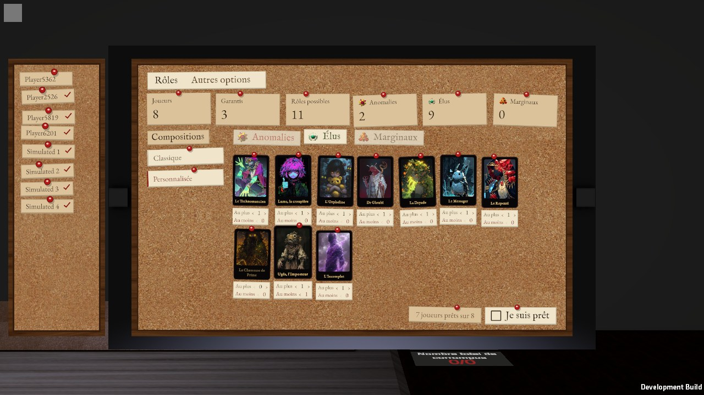

Tour 1 : la ligne droite des cartes reste (A0, « aucun autre ne me convient ») ; la carte elle-même ne change pas (section sans vote, l'actuel par défaut) ; les compteurs deviennent un signe et un chiffre, la phrase au survol (D3 👍). Pour les rôles : « essaie avec le tableau en liège de détective ».
Le liège, c'est celui que le jeu a déjà : le tableau des rôles de la tablette au lobby (liège un peu assombri, punaises rouges, kraft clair, choisis au tour 10 des maquettes du lobby) et la bande de liège de la table, la nuit.

La scène : la même qu'au tour 1 (vote du jour 2, huit joueurs, tu es Poyo, Dr Gloubi ; Steve, Brandon, Kiwi et Mathis ont voté ; 5 Élus, 2 Anomalies, le Robot ; 1 corrompu sur 6, 0 pour le Robot). Survole les portraits et les compteurs ; 1 et 2 ouvrent et ferment les rangées.
Sans question : sur le liège, les compteurs sont écrits sur un papier kraft punaisé (le rouge et l'orange foncent un peu pour se lire sur le papier).
Tout l'écran, assemblé ; seule la rangée du bas change.
La barre telle qu'elle est posée sur la table la nuit (son liège, son bois, ses logos), montée à l'écran ; les compteurs à côté. Image prise dans une autre partie : ses rôles ne sont pas ceux de la scène.
Le liège du lobby ; chaque portrait est une photo punaisée un peu de travers, chaque camp a son étiquette kraft. Le portrait survolé se redresse.
Comme L1, et un fil rouge tendu de l'étiquette du camp à chacun de ses portraits, comme sur un tableau d'enquête.
Les rôles sont les petites cartes du lobby (image et nom), punaisées par camp : on lit le nom sans survoler.